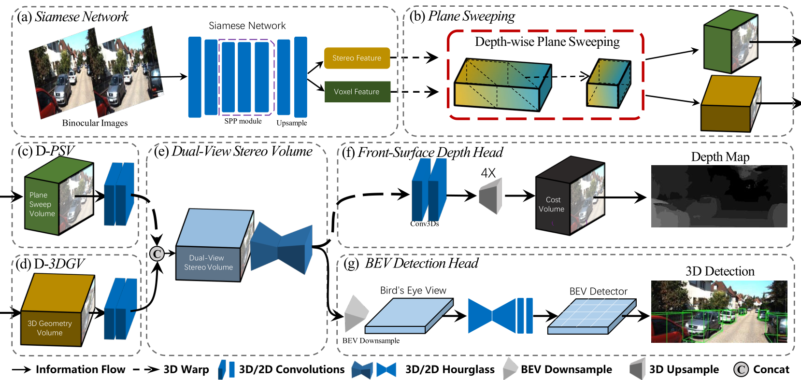
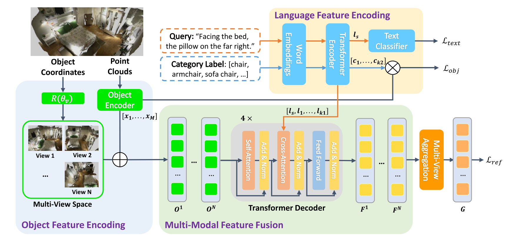
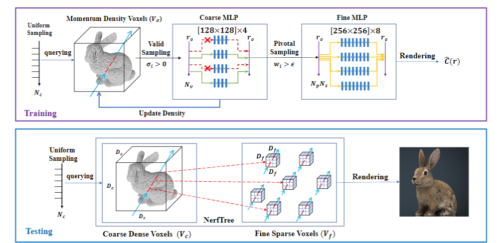
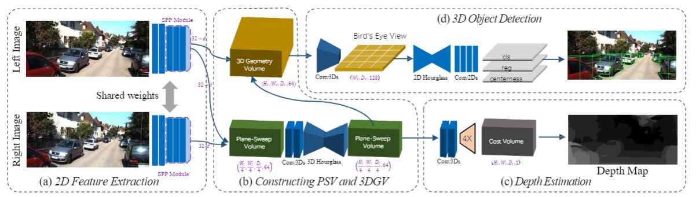
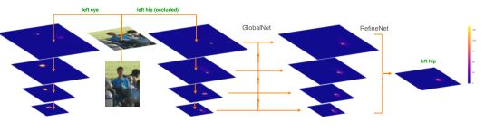
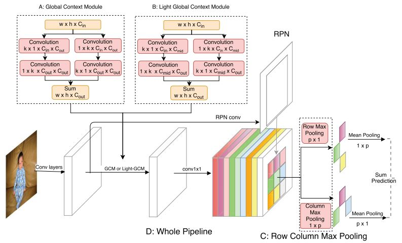

- [Sep 2022] One paper is accepted by NeurIPS 2022.
- [Aug 2022] DSGN++ is accepted by T-PAMI 2022 and code is available.
- [March 2022] Two papers got accepted by CVPR2022.
- [April 2020] Code for DSGN is released!
- [March 2020] DSGN is accepted by CVPR 2020.
- [June 2019] Fast Point R-CNN is accepted by ICCV 2019.
- [March 2018] Joined Youtu-Lab at Tencent as a research intern.
- [February 2018] One paper is accepted by CVPR 2018
- [Oct 2017] Won 1st Place in COCO 2017 Keypoint Challenge
- [Nov 2016] Joined Megvii Face++ as a research intern.
|

|
DSGN++: Exploiting Visual-Spatial Relation for Stereo-based 3D Detectors
Yilun Chen, Shijia Huang, Shu Liu, Bei Yu, Jiaya Jia
IEEE Transactions on Pattern Analysis and Machine Intelligence (T-PAMI), 2022 (accepted)
Ranked 1st place among all camera-based approaches on KITTI 3D detection leaderboard (All categories, Nov. 2021).
[PDF] [Code]
|
|

|
Multi-View Transformer for 3D Visual Grounding
Shijia Huang, Yilun Chen, Jiaya Jia, Liwei Wang
IEEE Conference on Computer Vision and Pattern Recognition (CVPR), 2022
[PDF] [Code]
|
|

|
Efficient Neural Radiance Fields
Tao Hu, Shu Liu, Yilun Chen, Tiancheng Shen, Jiaya Jia
IEEE Conference on Computer Vision and Pattern Recognition (CVPR), 2022
[PDF] [Code]
|
|

|
DSGN: Deep Stereo Geometry Network for 3D Object Detection
Yilun Chen, Shu Liu, Xiaoyong Shen, Jiaya Jia
IEEE Conference on Computer Vision and Pattern Recognition (CVPR), 2020
Ranked 1st place among all camera-based approaches on KITTI 3D detection leaderboard (All categories, Nov. 2019).
[PDF] [Project Page] [Code]
|
|

|
Cascaded Pyramid Network for Multi-Person Pose Estimation
Yilun Chen*, Zhicheng Wang*, Yuxiang Peng, Zhiqiang Zhang, Gang Yu, Jian Sun
IEEE Conference on Computer Vision and Pattern Recognition (CVPR), 2018
Champion of COCO 2017 Keypoint Challenge.
[PDF] [project page] [Code] [bibtex]
|
|

|
R-FCN++: Towards Accurate Region-based Fully Convolutional Networks for Object Detection
Zeming Li, Yilun Chen, Gang Yu, Yangdong Deng
Thirty-Second AAAI Conference on Artificial Intelligence (AAAI), 2018
[PDF] [bibtex]
|
|
|
Mar. 2020 - June. 2022, SmartMore Inc.
Intern Mentor: Shu Liu
|
|
|
Mar. 2018 - Jan. 2020, Tecent Youtu, X-Lab
Intern Mentor: Shu Liu
|
|
|
Nov. 2016 - Nov. 2017, Megvii Face++
Intern Mentor: Gang Yu
|
|
|
Aug. 2018 - Present ,
The Chinese University of Hong Kong
,
Ph.D. Student, Computer Science & Engineering
|
|
|
Aug. 2013 - July. 2017 ,
BeiHang University
,
Bachelor Degree, Computer Science & Engineering
|
-
Conference Reviewer: CVPR2020-2022, ECCV 2020, ICCV 2019,2021, ICLR 2022, NeurIPS 2022, ICRA 2021, IROS 2022
-
Jounral Reviewer: T-PAMI
-
Teaching: CSCI3310, CSCI3180, CSCI1120, ENGG1100
|